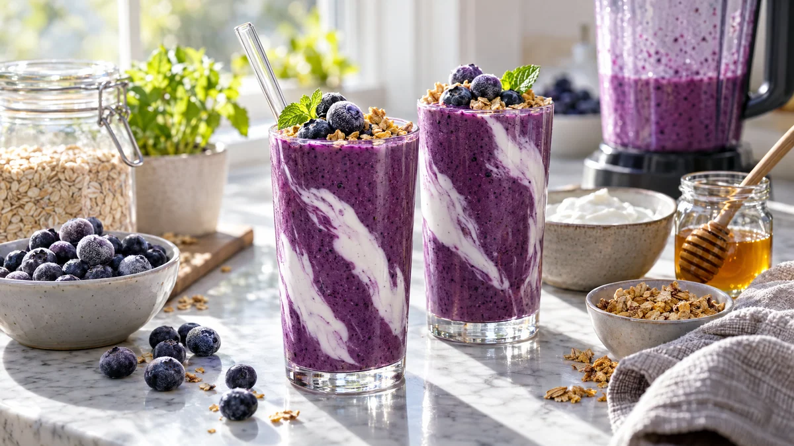

RESTFEST · RECEPTMellanmål · Dryck · Frukost & brunch
Blåbärssmoothie med havre och kvarg
En näve frysta blåbär, några skedar havregryn och en burk kvarg mixas till en tjock, djupt lila smoothie som mättar ända fram till middagen. Toppad med frostiga blåbär och lite granola ser den ut att komma från ett juicecafé. Klar på fem minuter, och helt utan banan.
- Förberedelse
- 5 min
- Tillagning
- 0 min
- Portioner
- 2 glas
- Nivå
- Nybörjare
 Det här behöver du
Det här behöver du
Tryck på + vid det du behöver köpa.
Smoothie
Topping
Gör så här
- Häll havregrynen och mjölken i mixern eller en hög bunke och låt dem svälla i 5 minuter. Då blir smoothien slät utan gryn.
- Lägg i blåbär, kvarg, honung och kanel.
- Mixa i ca 1 minut, tills smoothien är helt slät och tjock. Späd med lite mer mjölk om den är för tjock.
- Smaka av med mer honung om bären är syrliga.
- Häll upp i två glas.
Dekoration och servering
- Toppa med några frysta, frostiga blåbär, granola och ett myntablad precis före servering.
- Ringla lite kvarg längs insidan av glaset innan du häller i smoothien, så blir det vackra vita ränder mot det lila.
- Häll smoothien i en burk med lock för matlådan eller som mellanmål på jobbet. Den håller sig i kylen till nästa dag.
- Byt blåbären mot frysta hallon eller mango för en ny färg.
Mått och ugnstemperaturer
Måtten är svenska (dl, msk, tsk, krm). Ugnstemperaturerna gäller vanlig ugn med över- och undervärme; med varmluft, sänk med 20 grader.